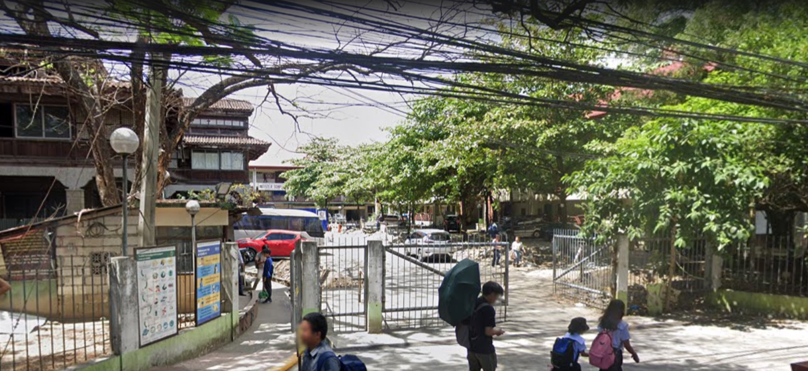

The Polytechnic University of the Philippines Institute of Technology (ITech) is focused on the actual training and "hands-on" approach to learning through its ladderized education programs which are designed to help learners to progress between Technical Vocational Education and Training (TVET) and Baccalaureate degrees and vice-versa. This type of education opens career opportunities and educational advancement to students as they are directly linked to what the industry needs.